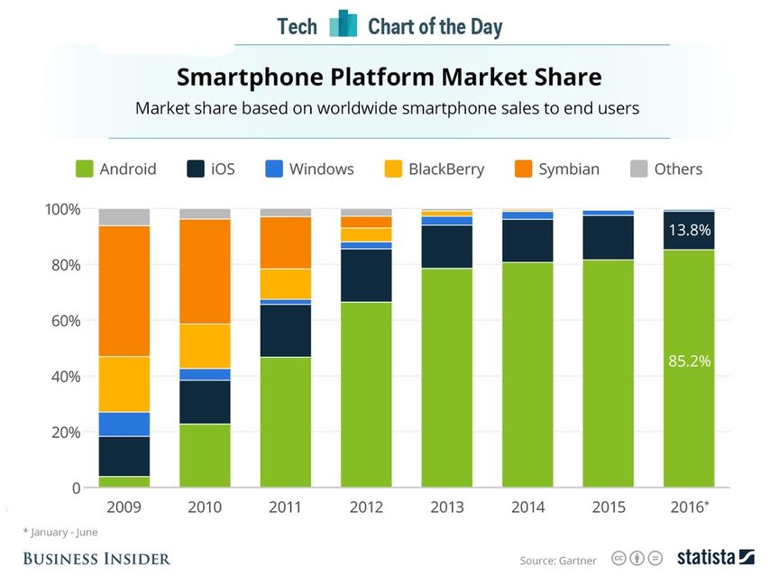

Introduction à React Native
Ecole Nationale Supérieure de Cognitique

Sommaire
- L’écosystème mobile
- Premiers pas avec React Native
- Anatomie d’une application React Native
L’écosystème mobile



Développement natif
Création d’applications en utilisant la technologie prévue par le concepteur de l’OS.
- Android : Java
- IOS : Objective-C ou Swift
Ces technologies sont incompatibles.
Avantages
- Accès à l’intégralité des fonctionnalités matérielles et logicielles du terminal mobile.
- Performances optimales.
Inconvénient (majeur !)
Nécessité de créer puis de faire évoluer une application pour chaque environnement.
Solutions hybrides
Création d’applications mobiles compatibles avec plusieurs OS mobiles grâce à un framework dédié.
Une application hybride est une application web qui s’exécute à l’intérieur d’un navigateur.
Exemples : Apache Cordova, Ionic
Avantages
- Fonctionnalités et performances proches de celles d’une application native.
- Economies de ressources pour créer l’application.
- Une seule base de code : maintenance et évolution facilitées.
Inconvénients
- Impossible d’accéder à certaines fonctionnalités matérielles ou logicielles spécifiques.
- Look’n’feel non natif.
- Mauvaises performances dans certains scenarii.
Développement natif multi-plateformes
Création d’applications mobiles compatibles avec plusieurs OS mobiles grâce à un framework dédié.
Le framework encapsule les véritables composants natifs de l’OS.
Exemples : React Native, Weex, Xamarin
Le meilleur des deux mondes ?
Combine les avantages du natif (look’n’feel, performances) et de l’hybride (une seule base de code).
Limite potentielle : le support de l’OS dépend entièrement du framework.
Premiers pas avec React Native
React Native
Framework créé par Facebook, open source depuis 2015.
Déclinaison mobile du framework JavaScript React.

Expo
Framework pour faciliter la création et le déploiement d’applications React Native.
- Expo CLI : outil en ligne de commande pour le développement local.
- Expo client : application mobile à installer sur le terminal cible pour le déploiement.
Création d’une application
# Install expo-cli globally
# (Node.js and Git are prerequisites)
npm install -g expo-cli
# Create a new app in the my-new-project subfolder
expo init my-new-project
Workflow managé : projet entièrement géré par Expo (plus simple).
Workflow bare : plus proche d’un projet React Native pur.
Contenu du répertoire créé
Déploiement de l’application
cd my-new-project # move into project directory
npm start # Or 'expo start'
Ensuite, scan du QR Code depuis l’application Expo (Android) ou l’appareil photo du smartphone (iOS).

Détails sur le déploiement
- L’application est hébergée sur un serveur web local.
- Expo s’y connecte pour la récupérer puis la lancer.
- Une interface de gestion s’affiche dans le navigateur.

Connexion au serveur Expo
L’application Expo client doit accéder au serveur web de la machine de développement pour pouvoir lancer l’application RN.
Il existe plusieurs modes de connexion :
- LAN : utilisation du réseau Wifi local. Peut poser problème dans certains environnements.
- Tunnel : création d’un tunnel avec ngrok pour accéder au serveur local via le web. Nécessite que le terminal mobile dispose d’un accès internet.
Rechargement dynamique

Exemple d’application

Anatomie d’une application React Native
Le fichier de configuration app.json
{
"expo": {
"name": "My New Project",
"slug": "my-new-project",
"privacy": "public",
"sdkVersion": "36.0.0",
"platforms": [
"ios",
"android",
"web"
],
"version": "1.0.0",
"orientation": "portrait",
"icon": "./assets/icon.png",
"splash": {
"image": "./assets/splash.png",
"resizeMode": "contain",
"backgroundColor": "#ffffff"
},
"updates": {
"fallbackToCacheTimeout": 0
},
"assetBundlePatterns": [
"**/*"
],
"ios": {
"supportsTablet": true
}
}
}
Le fichier package.json
{
"main": "node_modules/expo/AppEntry.js",
"scripts": {
"start": "expo start",
"android": "expo start --android",
"ios": "expo start --ios",
"web": "expo start --web",
"eject": "expo eject"
},
"dependencies": {
"expo": "~36.0.0",
"react": "~16.9.0",
"react-dom": "~16.9.0",
"react-native": "https://github.com/expo/react-native/archive/sdk-36.0.0.tar.gz",
"react-native-web": "~0.11.7"
},
"devDependencies": {
"babel-preset-expo": "~8.0.0",
"@babel/core": "^7.0.0"
},
"private": true
}
Le fichier principal App.js
import React from 'react';
import { StyleSheet, Text, View } from 'react-native';
export default function App() {
return (
<View style={styles.container}>
<Text>Open up App.js to start working on your app!</Text>
</View>
);
}
const styles = StyleSheet.create({
container: {
flex: 1,
backgroundColor: '#fff',
alignItems: 'center',
justifyContent: 'center',
},
});
JSX
Syntaxe introduite pour le framework web React permettant de décrire une UI en intégrant balisage et logique applicative.
// JSX for React (web)
const name = 'Clarisse Agbegnenou';
const element = <h1>Hello, {name}</h1>;
// JSX for React Native (mobile)
const a = <View />
const b = (
<View
foo='hello'
bar={baz}>
<Text>42</Text>
</View>
)
La notion de composant
Les composants sont les blocs de base d’une application React (Native).
Ils permettent de créer une UI sous forme déclarative par assemblage de composants.
Ils doivent disposer d’une méthode
render()qui définit leur rendu visuel.
Propriétés (props) d’un composant
Caractéristiques définies au moment de la création. Modifiables uniquement par le composant parent.
import React, { Component } from 'react';
import { Text, View } from 'react-native';
class Greeting extends Component {
render() {
return <Text>Hello {this.props.name}!</Text>;
}
}
export default class LotsOfGreetings extends Component {
render() {
return (
<View style={{ alignItems: "center" }}>
<Greeting name="John" />
<Greeting name="Paul" />
<Greeting name="Jones" />
</View>
);
}
}
Etat d’un composant
Etat interne (données) d’un composant, susceptible de changer au cours du temps (mutable).
Modifié uniquement via setState().
import React, { Component } from 'react';
import { StyleSheet, Text, View } from 'react-native';
class Counter extends Component {
constructor(props) {
super(props);
this.state = { count: 0 };
setInterval(() => {
this.setState({ count: this.state.count + 1 });
}, 1000);
}
render() {
const { count } = this.state;
const { color, size } = this.props;
return <Text style={{ color, fontSize: size }}>{count}</Text>;
}
}
export default class CounterApp extends Component {
render() {
return (
<View style={styles.container}>
<Counter color={"red"} size={30} />
</View>
);
}
}
const styles = StyleSheet.create({
container: {
flex: 1,
backgroundColor: "#fff",
alignItems: "center",
justifyContent: "center"
}
});
Composants de base

Composants d’interface utilisateur